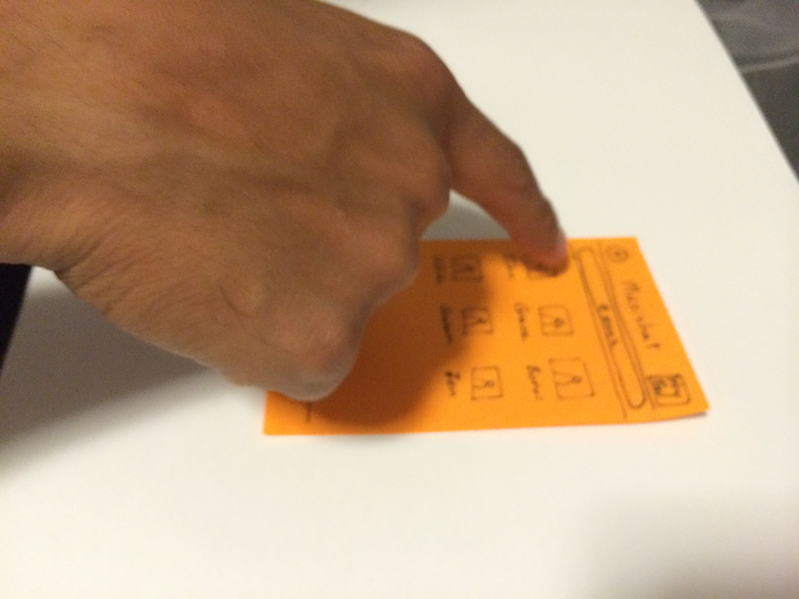
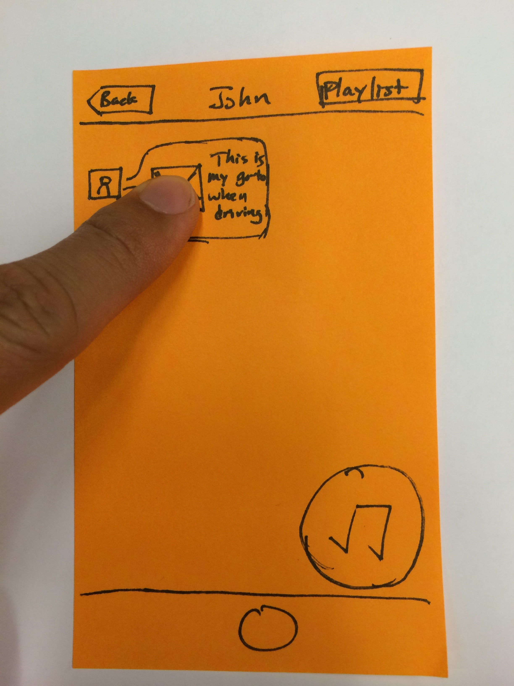
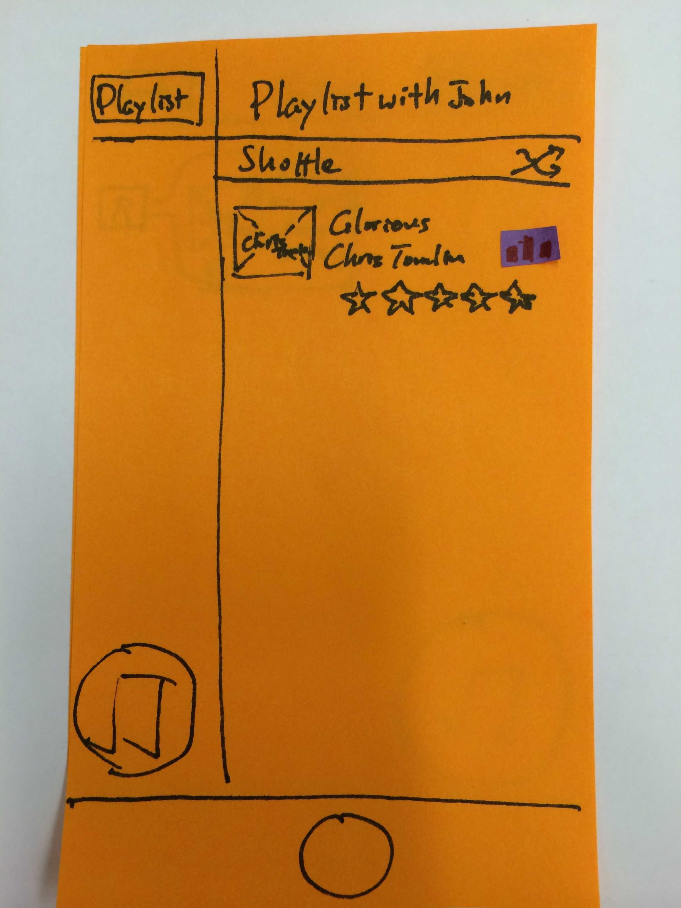
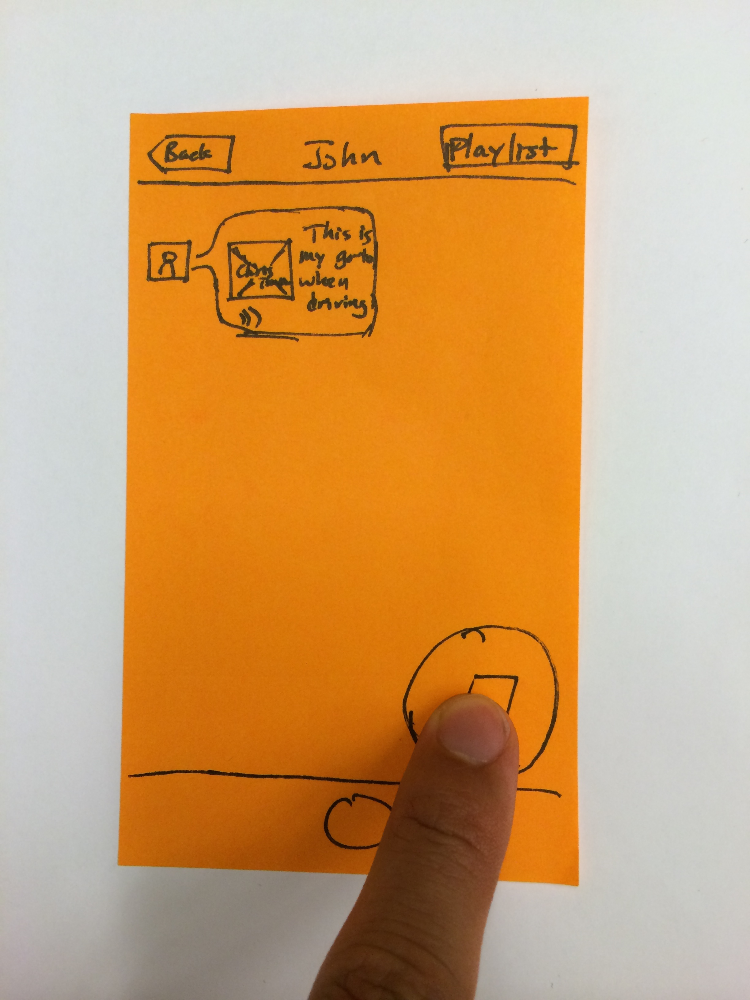
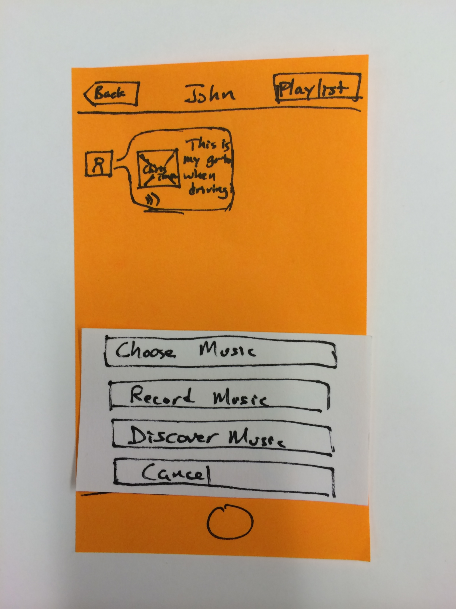
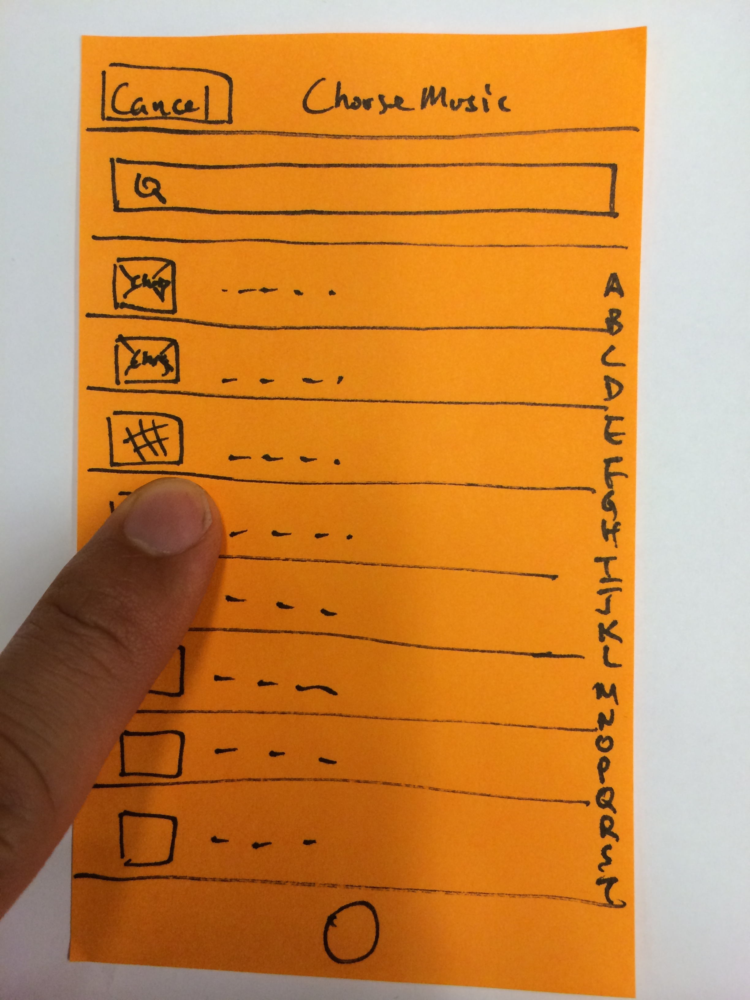
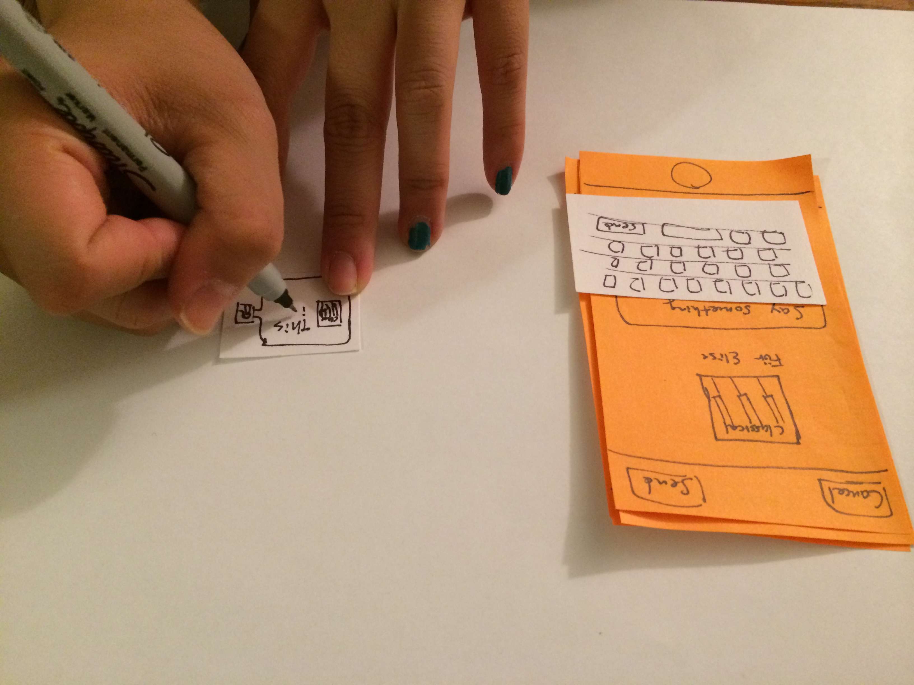
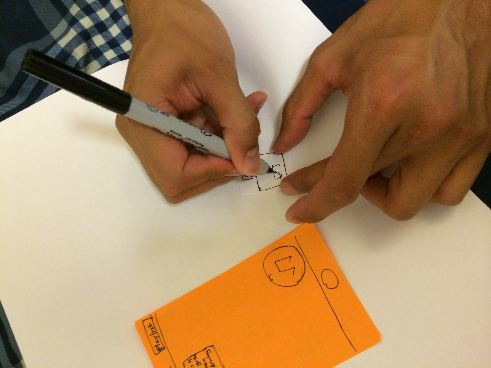
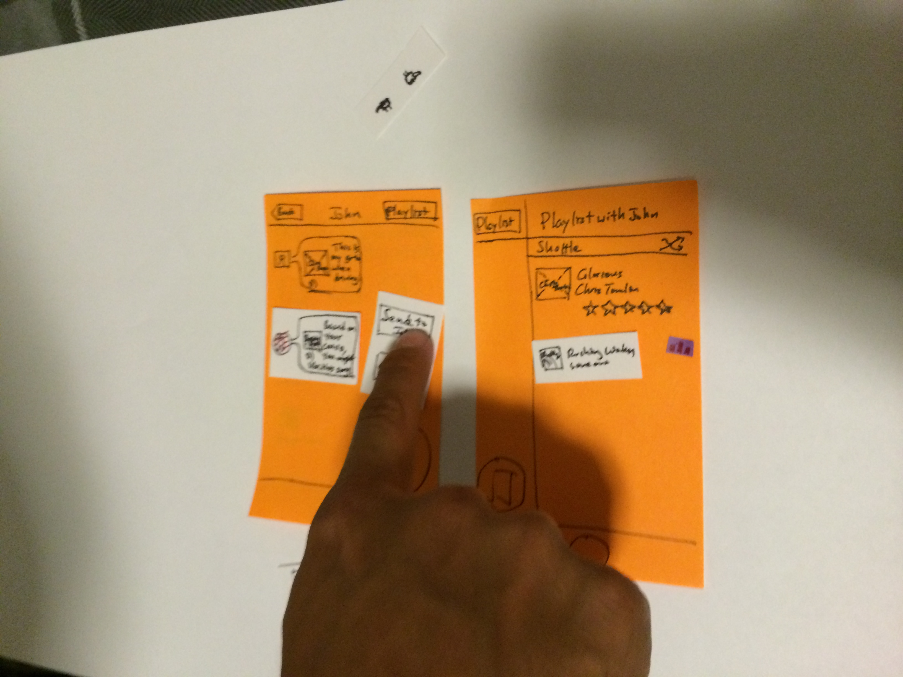
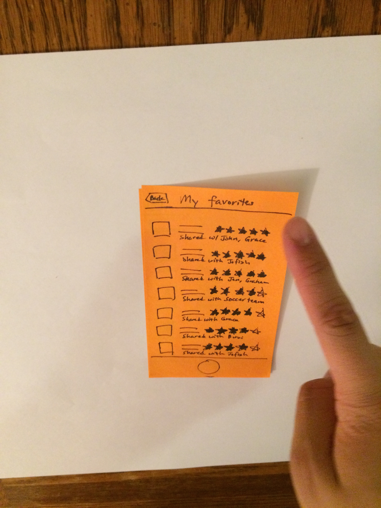

Deliverable
You may also visit the slide deck at
http://goo.gl/4zjm7B
Begin edit: (John mentioned in class that we should document our pivots and any additional need-finding we did. This next section was added after deadline)
Pivoting after additional Needfinding
After M2, we felt that we did not yet have enough compelling needs that we were comfortable pursuing for M3. Therefore, we did about 15 more need-finding interviews. The result of that are two of the three prototypes in M3. We summarize those needs below.
Communication via music:
- "I once saw on Spotify that my friend is listening to the same album as me and got really excited, but I cannot share that excitement with them at that moment."
- "I want people to share songs with me because I don't know which songs to listen to." This person wanted more than just her friend's recommended playlist. She felt a connection with that friend when she hears a song recommended by the friend and needs to let the friend know that.
- People want to not just talk about their music tastes with friends, but also experience those tastes by listening. (initially we thought people only want to do this with new acquintances, but from interviews we found people have this need with existing friends, because they are often not acquinted musically with those friends.)
- Music lovers want to save their musical interactions with friends. Currently, we can easily browse message and photo conversation but not music conversation.
- Communication through music is deeper than normal text conversation among music lovers.
Communication to self:
- Psychologically, people show compassion to other people but rarely to themselves.
- "I use to write diary when I was like 15-16, but I stopped in college because I got too busy." - adults in university or working career are too busy to stop and write deep thoughts. Life gets in the way.
- As we live through the days, weeks, and years, we forget a lot of those memories and thoughts.
- There needs to be a personal, safe space in order to think and to record.
- Some people found the idea of recording voice or video repulsive compared to writing, because writing gives them more time to think. Others feel they could save time by recording themselves when alone, e.g. driving to work.
End edit
Additional Pictures Documenting Prototypes and Testing
1. Musichat
User interacting with the homepage

User enters chat with John and listens to the song John sent. We act as the Wizard and plays the song from our iPhone.

User replies to John. We emphasize that the primary mode of communication is through music with a large music icon and no way to directly enter text. Some users found this feature confusing.

An option menu pops up asking user if they would like to include a song from their own collection, record music, or have the app suggest music.

If "choose music" is selected, then the user selects a music and can choose to embellish the music with their own thoughts or explanations. Every user who selected music chose to also include their thoughts (they wrote their thoughts in little dialogue boxes).

If "discover music" is selected, the user gets a message from Musichat with a suggested music. She can then listen to it before deciding whether to send that to her friend.

Finally, the user can also view and play the songs she has starred from shared playlists with all her friends. Here, she can get a sense for how her musical taste aligns with her friends. Listening to a song might remind her of past conversations around this song, or similar songs, with a particular friend and cause her, out of spontaneity, to chat with that friend again!
